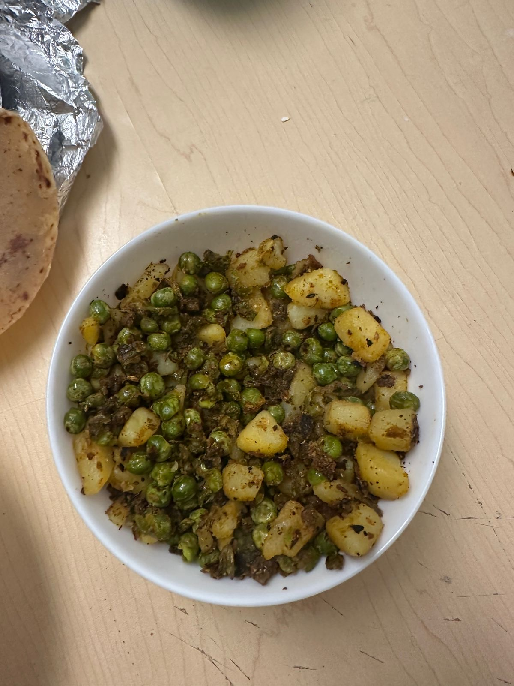
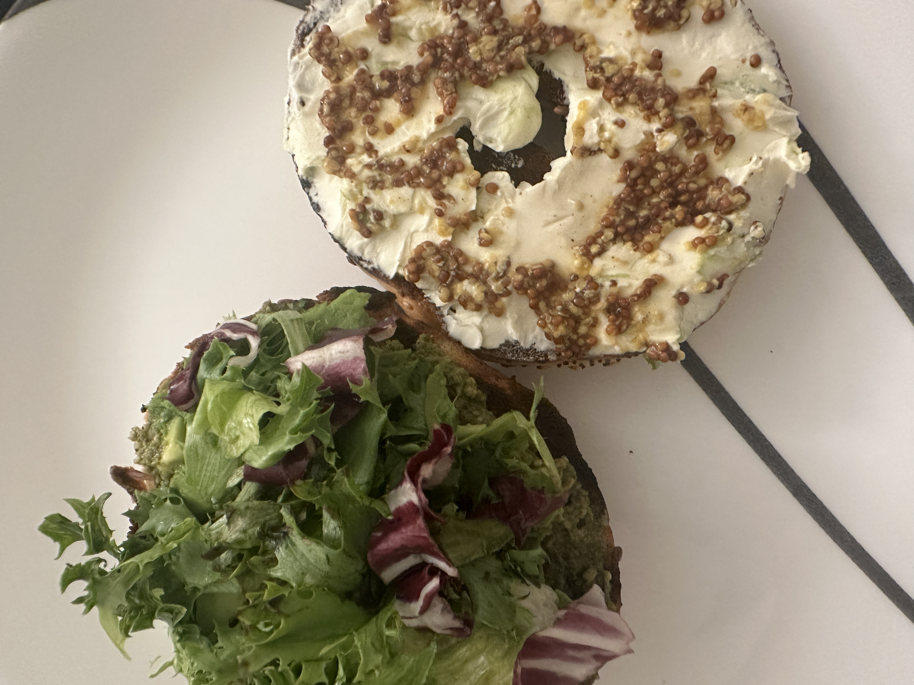

PASTA
A RECIPE made with major failure and slight success. The first burned but the next attempt was cooked and edible.
SEE MORE
FRIED RICE
A RECIPE with slight sucess and loads of salt. A not so bad attempt but definately edible though the rice was ummm.
SEE MORE
KADHI CHAWAL
A RECIPE made with success. The ingredients properly cooked however salt again overpowered the dynamics.
SEE MORE
CHICKEN SALAD
A RECIPE made with a little too much salad dressing though the cucumbers were fresh.
SEE MORE
BAGEL SANDWHICH
A RECIPE which was absolutely easy and yummy, used the right sauces for this and the bagel rocks.
SEE MORE

INDIAN FOOD- ALOO SABZI, BHINDI AND YELLOW RICE
A RECIPE where something a litle complicated was tried and was made from scratch but the result was good.
SEE MORE
INDIAN KHICHDI
A RECIPE which was easy and made from scratch but it was good for a first try and surprisingly flavourful.
SEE MORE

A MORE ADVANCE BAGEL
A RECIPE made to make something good much more better, tried new ingredients and sauces and absolutely devoured it.
SEE MORE
TOMATO RICE
A RECIPE made from fresh tomato garlic and onion sauce but sadly the rice was burnt.
SEE MORE
CHOLE NAAN
A RECIPE made from fresh chickpeas and made into a curry and it was a complete success.
SEE MORE